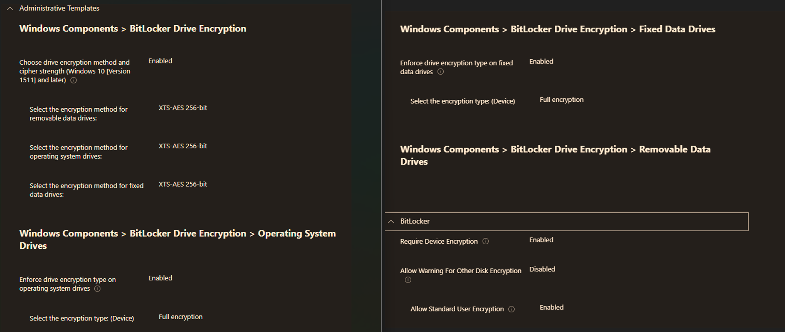
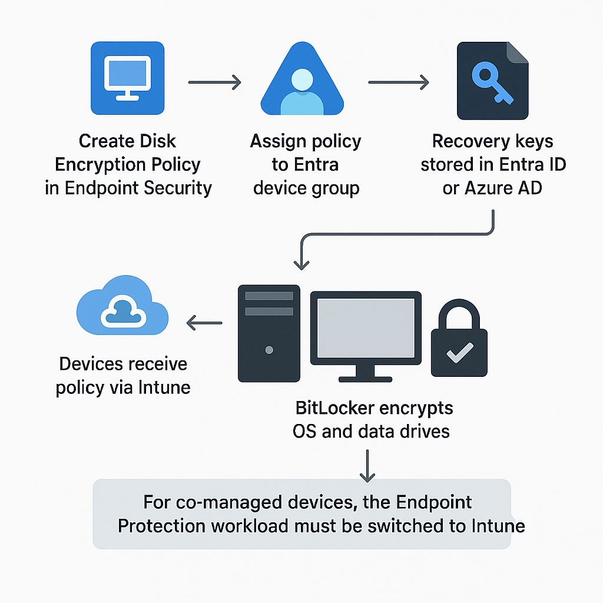

Challenge
Encrypt cloud-native and co-managed Windows devices using Microsoft Intune, ensuring compliance and recovery key protection without user disruption. The solution needed to support both Entra-joined and hybrid-joined devices enrolled via Intune or SCCM co-management.
Tools & Technologies
- Microsoft Intune (Endpoint Security)
- Microsoft Entra Security Groups
- Co-management with Configuration Manager (SCCM)
Implementation & Environment
Depending on the device type, we used a Disk Encryption policy from Intune’s Endpoint Security tab. This policy functions similarly to an ADMX-backed GPO, defining encryption methods and enforcement for OS, fixed, and removable drives.
Steps:
- Create a Disk Encryption policy in Intune.
- Assign the policy to a Microsoft Entra device group.
- Cloud-only devices receive and apply the policy automatically.
- For hybrid-joined or co-managed devices:
- Ensure the device is enrolled in Intune or co-managed via SCCM.
- Switch the Endpoint Protection workload to Intune in SCCM to allow BitLocker settings to apply.
Intune Policy Configuration
Click the image below to view the full-resolution policy settings:
Automation Flow Diagram
This diagram illustrates the BitLocker deployment process via Intune:
Impact
- Unified BitLocker deployment across cloud and hybrid devices
- Recovery keys stored securely in Entra ID / Azure AD
- No user interaction required
- Improved compliance and simplified key recovery